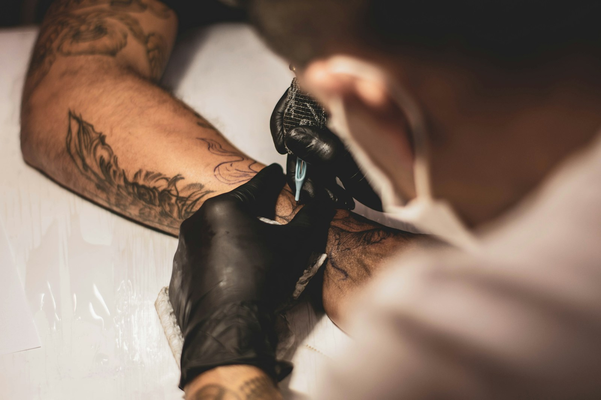

Lia Nunes
FINE LINE / BOTÂNICA
FEITO DE HISTÓRIAS. DESENHADO NA PELE.
Sua história não veio pronta.
Sua tatuagem também não precisa vir.

O TRAÇO É NOSSO.01 / MENOS PADRÃO. MAIS EXPRESSÃO.
Tem coisa que palavras não contam. Um recomeço, uma memória, um pedaço de quem você está se tornando.
O conceito TRAÇO nasce desse encontro: escuta de verdade, criação com intenção e liberdade para encontrar uma linguagem que seja sua.
Toda ideia merece uma conversa ↗Referências, dúvidas e significado entram na conversa antes do desenho.
Uma proposta visual que conversa com sua identidade e seu movimento.
Espaço para decidir com calma e participar de cada escolha do projeto.
02 / UM POUCO DO NOSSO UNIVERSO
Ilustrações conceituais originais. Não representam tatuagens executadas.
03 / LINGUAGENS QUE SE ENCONTRAM
Personas criativas fictícias para apresentar o conceito do estúdio.
FINE LINE / BOTÂNICA
BLACKWORK / CONTRASTE
ORNAMENTAL / GEOMETRIA
TODA HISTÓRIA COMEÇA COM UMA IDEIA.